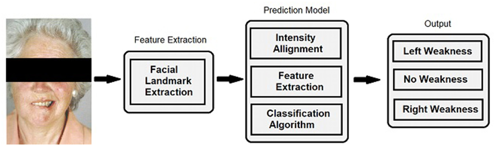
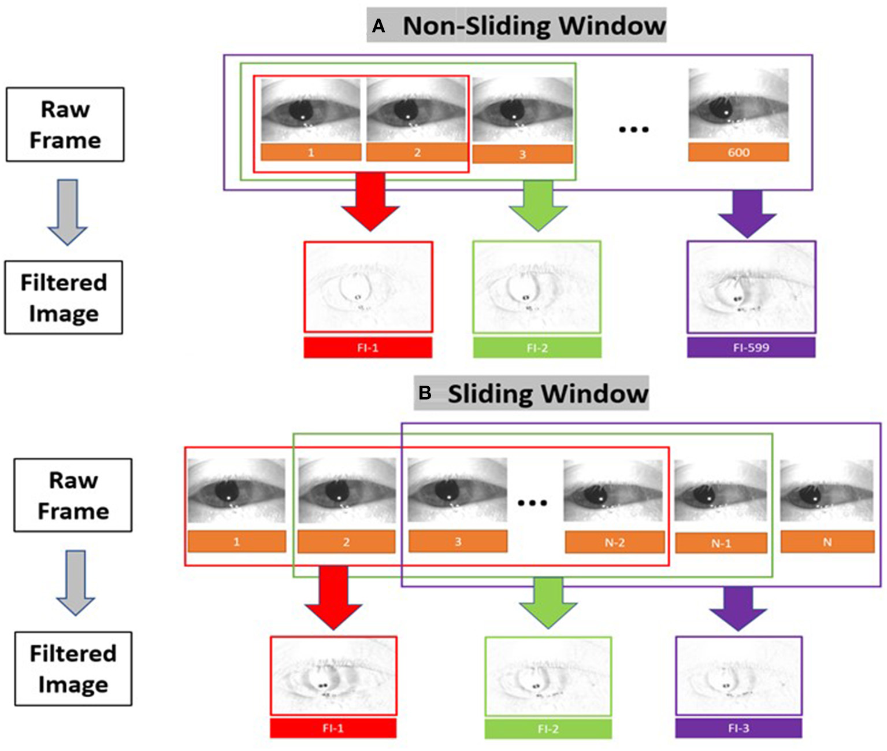
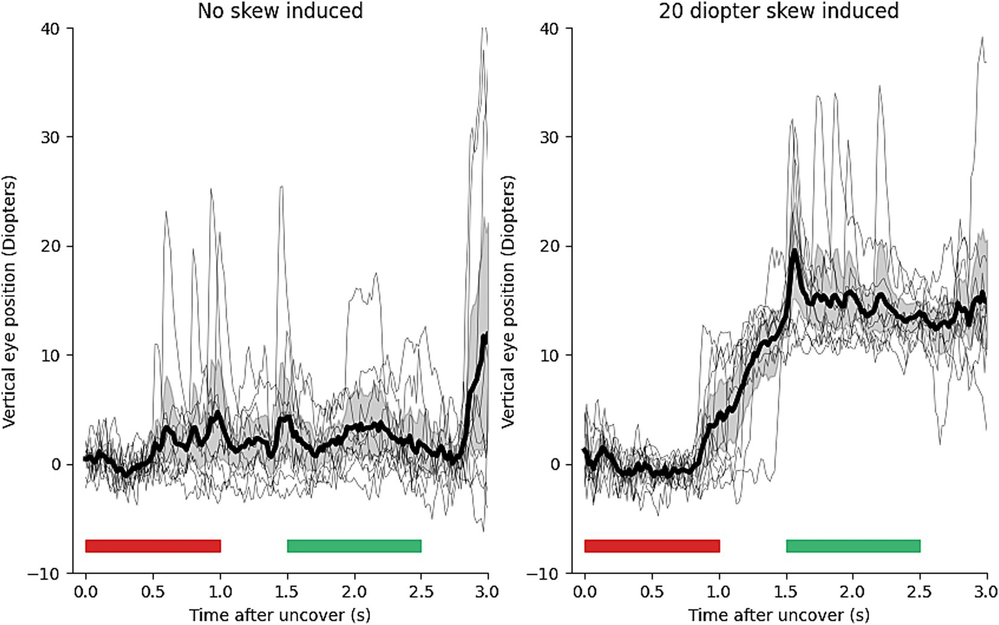
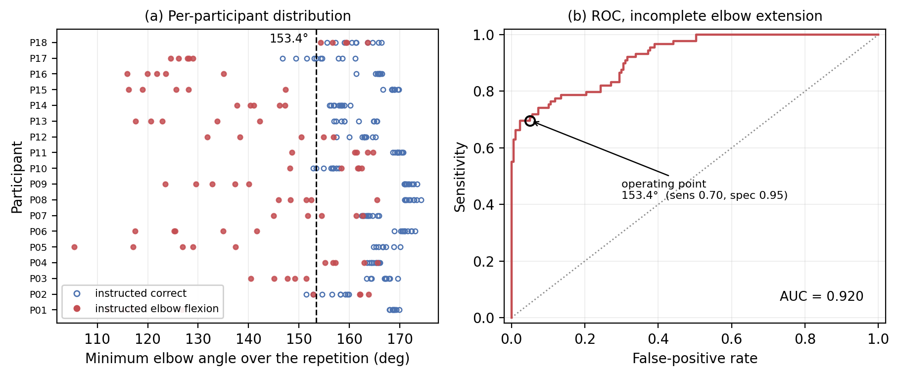

BEFAST × COMPUTER VISION · 文献到特征
18 篇论文，最终落到五条
可演示的特征流水线
F
Face
对齐面部
左右 HOG 差异
E
Eye
运动滤波
虹膜相对位移
A
Arm
关节角度
代偿持续时间
B
Balance
骨架序列
步态时序
S
Speech
声学表征
wav2vec2 层特征
REPRODUCIBILITY MATRIX
只有少数链路能直接复现；
其余必须诚实地做方法代理
| 模块 / 论文 | 可运行资产 | 本 Demo 证据级别 | 关键边界 |
|---|---|---|---|
| Face · Zhuang / Aldridge | 方法公开 | 方法复现 | HOG 可实现；数据按申请，未发现权重 |
| Eye · aEYE / EyePhone | 公式 / MediaPipe | 方法复现 | 原分类器与临床数据未公开 |
| Arm · Pavlikov 2026 | 代码 + 数据 + 阈值 | 开放复现 | 913 条记录，CC BY 4.0 |
| Balance · Peng 2026 | 论文结构 | 代理展示 | 未发现公开训练数据或权重 |
| Speech · Javanmardi 2023 | 基础模型公开 | 模型特征复现 | UA-Speech 受限；使用合成语音 |
FACE · METHOD REPRODUCTION
Face feature：主动微笑时，左右面部运动不对称
01 · 定义
面部无力 / facial weakness
可见特征不是“脸歪”这个标签，而是左右面部肌肉收缩不一致。
临床上看什么
口角高度差、鼻唇沟变浅、眼裂或眉位不对称；动作中的变化比静态脸型差异更重要。
口角高度差、鼻唇沟变浅、眼裂或眉位不对称；动作中的变化比静态脸型差异更重要。
任务：抬眉、闭眼、露齿或微笑。
02 · 看起来是什么

Aldridge et al. 2022 · Figure 1 · CC BY（论文示例已遮挡眼区）
03 · 我们怎么提取
1检测 facial landmarks，校正平移、尺度与头部旋转。
2以中线镜像配准左右眼、鼻唇沟和口角区域。
3计算 HOG 梯度方向，比较左右纹理与运动差异。
方法复现；论文分类权重未公开，本页不输出诊断。
EYE · aEYE RECURSIVE FILTER
Nystagmus feature：眼球出现节律性往复运动
01 · 定义
眼震 / nystagmus
眼震是不自主、节律性的眼球摆动，常由慢相漂移和快相复位连续组成。
临床上看什么
运动方向、振幅、频率，以及快慢相是否形成重复周期；眨眼、主动扫视和镜头抖动是干扰。
运动方向、振幅、频率，以及快慢相是否形成重复周期；眨眼、主动扫视和镜头抖动是干扰。
02 · 看起来是什么
真实眼震示例 · CC BY-SA 4.0
观察瞳孔的重复水平往复，而不是单次扫视。
03 · 我们怎么提取

Fₜ = |Iₜ − Mₜ| β = .25
1递归背景模型压低静止纹理，保留逐帧眼球运动。
2计算运动能量并切成窗口，再由窗口投票形成视频级结果。
滤波为本地复现；AUROC .86 是论文值，分类权重未公开。
EYE · EYEPHONE LANDMARK GEOMETRY
Skew feature：遮盖切换后，两眼出现垂直重新对位
01 · 定义
垂直斜视 / skew deviation
Skew 是双眼的垂直错位；在 cover–uncover 或交替遮盖时，可表现为被遮眼重新显露后的垂直复位运动。
临床上看什么
不是虹膜绝对高度，而是遮盖事件前后、两眼相对的垂直位置变化。
不是虹膜绝对高度，而是遮盖事件前后、两眼相对的垂直位置变化。
研究阈值语境：≥ 5 prism diopters。
02 · 看起来是什么

EyePhone Figure 2：无 skew 与 20 PD skew 的垂直眼位轨迹 · CC BY
03 · 我们怎么提取
1用眼区亮度变化定位 cover / uncover 时间点。
2逐帧跟踪 MediaPipe iris 与 nose landmark。
corrected iris = irisᵧ − noseᵧ
skew = right − left
skew = right − left
3比较遮盖前 1 s 与显露后 500 ms 的平均垂直位置。
.93
Spearman
.90
AUC
n=10
模拟研究
ARM · OPEN DATA REPRODUCTION
Arm feature：完成抬臂任务时，身体用“代偿动作”绕过受限关节
01 · 定义
上肢代偿 / compensation
代偿不是手臂位置本身，而是为了完成目标动作而出现的额外肩、躯干或头部运动。
临床上看什么
肘伸展不足、双臂不对称、耸肩、躯干侧倾与头部偏移；异常需持续一段时间，而非单帧噪声。
肘伸展不足、双臂不对称、耸肩、躯干侧倾与头部偏移；异常需持续一段时间，而非单帧噪声。
02 · 看起来是什么

作者 Figure 4：左为每次动作的最小肘角，右为阈值 ROC · 开放数据生成
03 · 我们怎么提取
肘角
肩高差
肩抬高
躯干倾斜
头部偏移
1人体姿态关键点换算 5 个可解释几何量。
2每帧与校准阈值比较，连续超过 250 ms 才计为事件。
913
开放记录
153.4°
肘角阈值
250 ms
持续窗
BALANCE · SKELETON SEQUENCE PROXY
Balance feature：步态中的左右时序与身体摆动失去对称
01 · 定义
步态和平衡异常
这类特征来自连续动作，不是某一帧姿势：两侧支撑与摆动时长不同，身体重心和躯干摆动也可能偏向一侧。
临床上看什么
步宽、步频、支撑/摆动期、踝间距，以及肩线和躯干随时间的摆动。
步宽、步频、支撑/摆动期、踝间距，以及肩线和躯干随时间的摆动。
02 · 看起来是什么
本地 YOLO Pose · 关节点随步态移动
看连续骨架的左右节律，而不是把一帧当成诊断。
03 · 我们怎么提取
1逐帧获得髋、膝、踝、肩等 2D / 3D 关节坐标。
2按身高和髋中心归一化，组成 T × J × C 的骨架序列。
3从序列计算步态时序；论文再用 Attention + LSTM / Inception 分型。
97.3% 为论文内部测试值；本页只运行姿态坐标代理，未发现权重。
SPEECH · ACTUAL WAV2VEC2 EXTRACTION
Speech feature：构音、发声与节律异常改变声音的时频结构
01 · 定义
构音障碍 / dysarthria
神经肌肉控制受损会影响语音运动，使清晰度、音质、语速和韵律发生变化。
在信号里看什么
能量与共振峰过渡、发音时长、停顿、构音精度和声门音质；关注“怎么说”，不只是“说了什么”。
能量与共振峰过渡、发音时长、停顿、构音精度和声门音质；关注“怎么说”，不只是“说了什么”。
02 · 声音看起来是什么
Waveform · 音量包络
Log spectrogram · 时间 × 频率
本页输入为合成语音，不含患者音频。
03 · 我们怎么提取
1重采样到 16 kHz，输入 wav2vec2-base。
2约每 20 ms 产生一个 768 维 embedding。
12 层特征响应
真实本地推理252
time steps
768
dimensions
12
layers
模型公开；UA-Speech 受限，不声称疾病分类结果。
PRODUCT DIRECTION · EVIDENCE FIRST
Demo 不做五个黑盒分数，
而是保留每条特征证据
{
"module": "eye | face | arm | balance | speech",
"feature": "iris_delta_y",
"value": 2.8,
"unit": "px",
"timeRange": [3.20, 3.45],
"sourceLevel": "open | method | proxy",
"modelVersion": "mediapipe-face-landmarker",
"evidence": "frame/trace reference"
}
下一步：接回手机工作流
01媒体导入
→
02特征事件 JSON
→
03医生端时间线
临床边界
当前是研究与交互原型。诊断用途需要独立数据、预注册验证与医疗器械合规路径。
开放复现方法复现代理展示